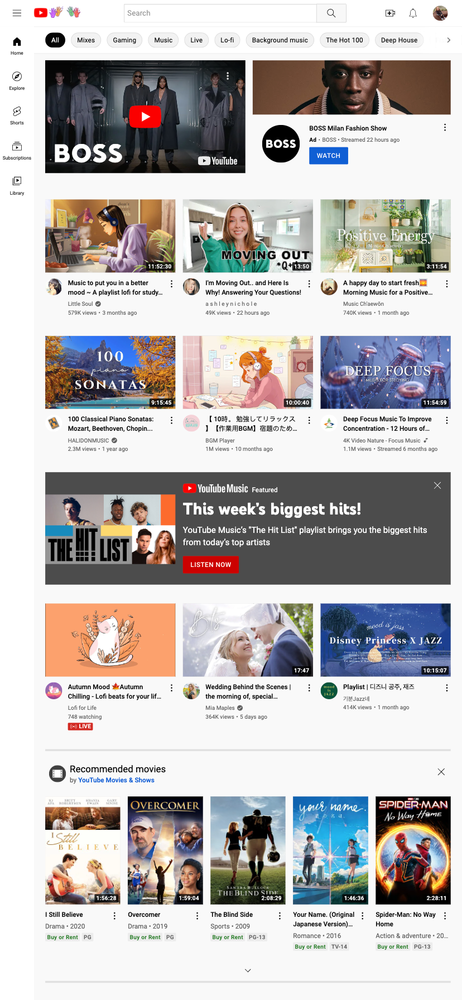

Hick's Law
Client Care
I feel like this page represent Hick's Law very well because there are minimal choices of what you can do. This helps the user not have to think about what to do because the choices are limited and easy to make. When you first open the page it shows a button saying "start your free trial". They continue that choice at the end of the page telling the user to sign up and stay updated.
White Space and Clean Design
The pinterest home page shows very good use of white space. It puts the focus on the main idea of the page. You can find anything on pinterest and that is what it is trying to convey to you.
Alignment
YouTube
Youtube definitely utilzes the alignment principle of design. Everything on youtube is lined up nicely. Most of the videos are horizontally aligned as well as vertically. They use multiple alignment styles that all work together.